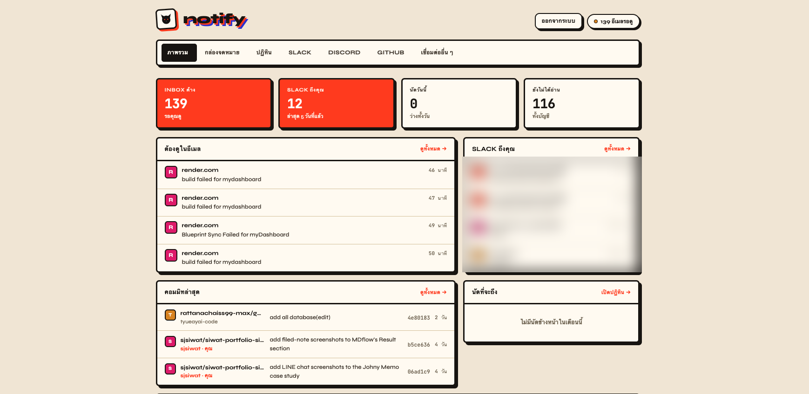
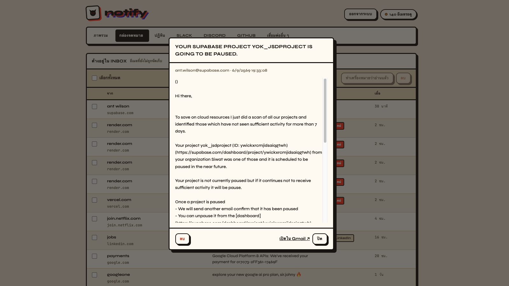
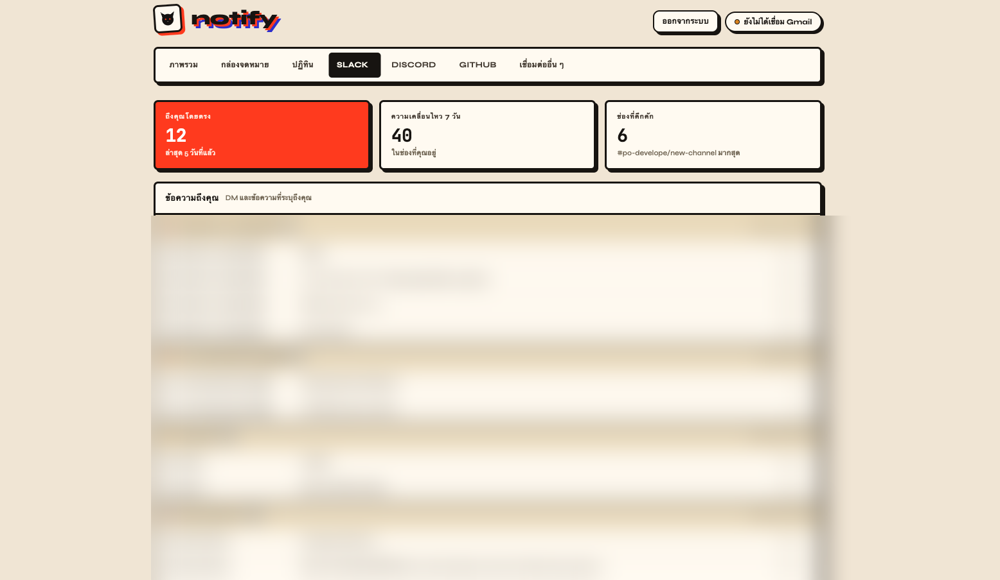
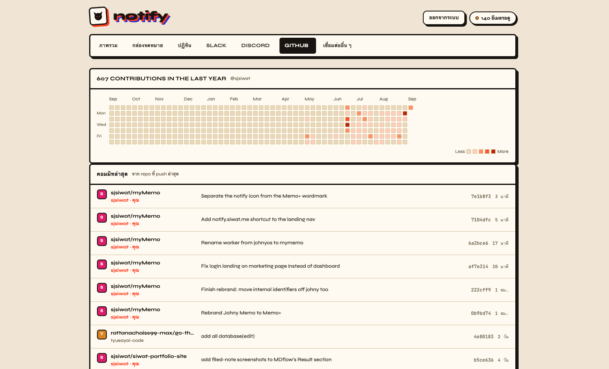

Vanilla JS, dual-mode
One HTML file that worked two different ways.
- Ran either as a hosted page hitting its own API, or dropped into an artifact host calling the same data through a different transport — two adapters behind one interface.
Case Study
Gmail, Google Calendar, Slack, Discord and GitHub, pulled live into a single page — with a login gate, because it reads all of it.

I check the same five places every morning — Gmail, Google Calendar, Slack, Discord and GitHub — and wanted one page that already knows what's worth reading, instead of five tabs opened out of habit. notify pulls live from each account on every load; nothing is cached in a database anywhere.
It started as a single vanilla-JS file. This year it got rebuilt into React and Tailwind, and — because it was about to leave localhost for a public domain — it got a login gate it never needed before.



Four things shaped every decision below more than any single feature request did:
The rewrite this year went the opposite direction from the usual "add a framework" story — it got simpler by deleting a whole mode, not by adding one.
One HTML file that worked two different ways.
Rebuilt once the dual-mode indirection stopped earning its keep.
The original localhost-only build had no login at all — anyone with the URL saw everything. Making it opt-in behind two environment variables meant local development stayed frictionless while the public deploy could lock down to one email address, verified through its own separate Google OAuth flow.
Trade-offIt's binary — one allowed email per instance, not real multi-user auth. Sharing this with someone else means them running their own copy.
Simpler and safer than persisting Gmail or Slack content in a database — there's nothing to leak from a breach that isn't already reachable through the same OAuth tokens, and no schema to keep in sync with five providers' different data models.
Trade-offOnce the cache expires, the page pays every provider's round-trip on the same load — a slow provider is a slow page, not just a slow section of it.
Adding, editing or deleting an event calls the real Google Calendar API each time, so what notify shows and what a phone's calendar app shows never drift apart — there's no separately-synced copy that could fall behind.
Trade-offEvery edit is a live network call. There's no offline drafting — losing connectivity mid-edit means the change didn't happen, not that it's queued.
A persistent process suited the app better than a cold-starting function would — the 60-second cache and the Google/Slack/GitHub tokens both live in server memory and on disk between requests, not re-fetched fresh on every invocation.
Trade-offOne server means no automatic multi-region scaling — a ceiling that was never close for a single-owner dashboard, but a real one if that changed.
A same-origin check on every non-GET request only ever allowed localhost
or 127.0.0.1 as a valid origin — a holdover from when the app assumed
it would only run on its own developer's machine. Every "mark as read", delete,
calendar edit and logout call would have silently failed with a 403 the moment the
app left localhost for a real domain. Caught it by testing the production build
against a temporary deploy before pointing the real domain at it.
The fix was to compare the request's Origin against its own
Host instead of a hardcoded pattern — one check that works for local
dev and the live domain without a special case for either.
Deploying to Render, a NODE_ENV=production variable — added so login
cookies would correctly get the Secure flag — also told npm to skip
devDependencies during install. Vite itself was a dev dependency, so it
wasn't installed by the time the build script tried to run it, and the build failed
with vite: not found.
The fix was two-part: drop the environment variable, and derive the cookie's
Secure flag from the live request (req.secure, accurate
once trust proxy is set for the platform's reverse proxy) instead of an
environment flag that turned out to have a side effect it was never meant to have.
notify is live and is genuinely the first tab open every morning — the same real inbox, calendar and Slack workspace the login gate exists to protect. It's deployed on Render, with Cloudflare handling DNS for the custom domain, and login is required for anyone who isn't the one allowed email address.
Live at notify.siwat.me